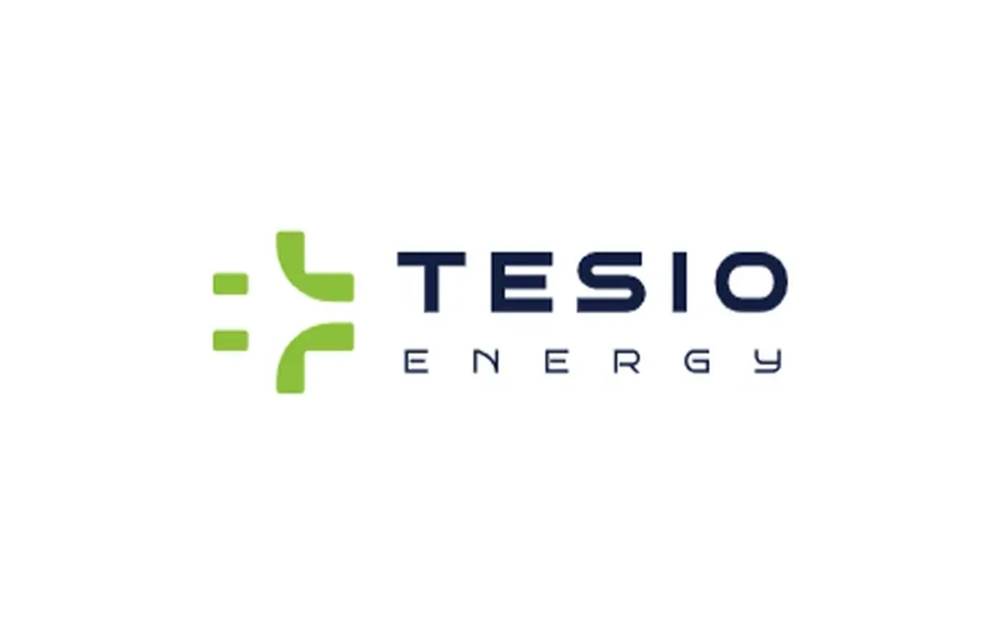
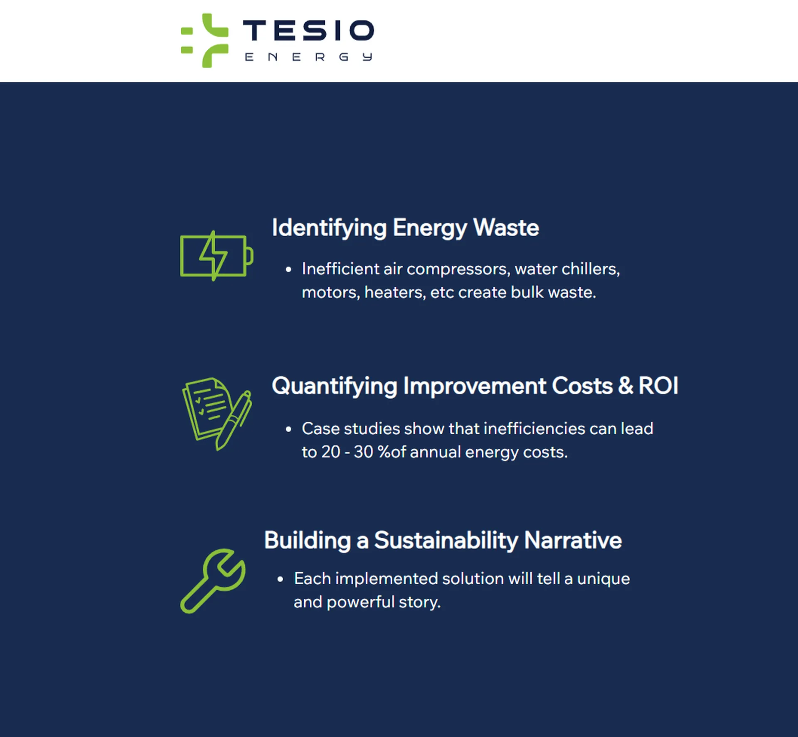
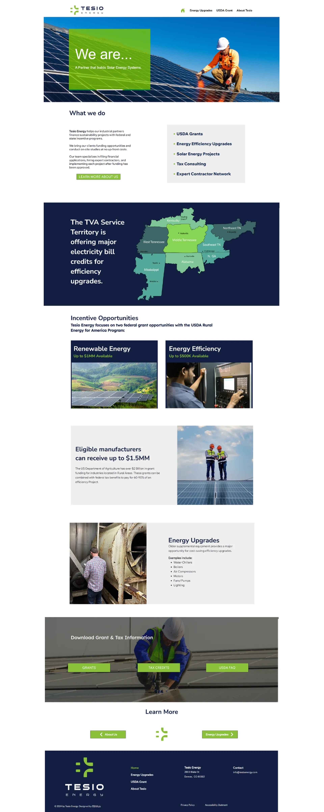
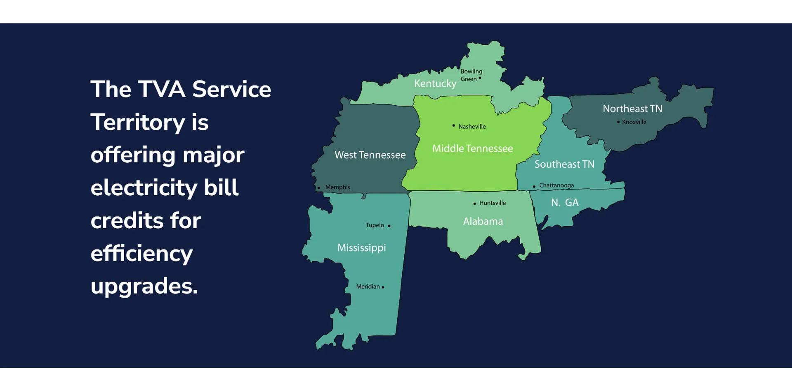

Tesio Energy
Structure with Spark
Website Migration · Web Design · Content Management · Brand Implementation
At Tesio Energy, I worked within strict brand guidelines to conceptualize and produce high-quality designs across multiple mediums. My role involved translating established visual identity standards into a cohesive and polished website build while ensuring seamless user experience and brand consistency. Additionally, I collaborated on social media content, maintaining brand integrity while managing multiple projects under tight deadlines. This project was a balance of creativity within structure, bringing Tesio's vision to life while staying true to its defined aesthetic and strategic goals.

Overview
Tesio Energy is a clean technology consultancy helping manufacturers across the Tennessee Valley Authority region modernize operations through grant-funded cleaner energy initiatives. I led Tesio's website development and brand implementation under the PBMA umbrella, after personally bringing the client into the agency through a coworking network connection.
Discovery & Initial Needs
The client initially attempted to build a site on Squarespace but found the platform limiting for content management and scalability. After consulting with him, I recommended a strategic migration to Wix Studio, allowing for a stronger CMS, easier scaling for future growth, and more control over dynamic content updates.
Technical Challenges & Solutions
One of the project's biggest initial hurdles was resolving significant backend issues:
- Tesio's domain was hosted with a problematic, outdated provider that complicated site deployment.
- I handled the full backend migration: porting the domain, updating DNS settings, and reassigning name servers to ensure clean integration with Wix.
- These technical steps were critical. Without them, even a perfectly designed site wouldn't have launched on schedule.
Website Design & Execution
Facing a fast-approaching series of executive pitches, we needed a strong landing page immediately. Working quickly and independently, I:
- Built the new Wix website from the ground up
- Precisely replicated Tesio's strict brand guidelines for the homepage
- Expanded the visual language for subsequent pages (process, grants, team bios), maintaining brand consistency while improving user flow
- Implemented a clean, scalable backend system to allow Tesio to easily update content via Wix's mobile app
All design, migration, and technical setup was executed by me directly, without external developers, keeping the project moving at the necessary speed and ensuring brand fidelity throughout.
Results & Platform Strategy
- Migrated and stabilized Tesio's web presence within an urgent timeline
- Created a CMS structure ready for scaling as new services and case studies are added
- Empowered Tesio's founder with mobile-accessible backend controls
- Delivered a website that maintained strict brand adherence while optimizing for user experience and site performance
Reflection
This project emphasized the power of hands-on technical agility paired with strategic design. By resolving backend roadblocks and adapting the visual buildout quickly and precisely, I helped Tesio secure a functional, polished digital presence exactly when it mattered most.
Key Contributions
- Client acquisition through coworking relationship
- Full backend domain migration and name server correction
- Brand-consistent site design and full Wix website execution
- Strategic CMS structure for client usability and future scaling
Gallery


